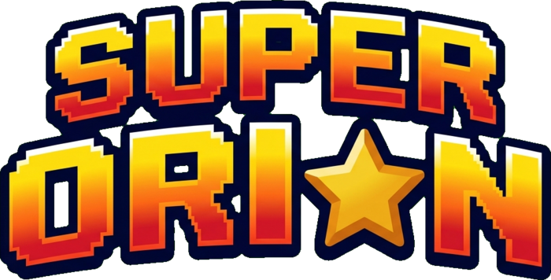
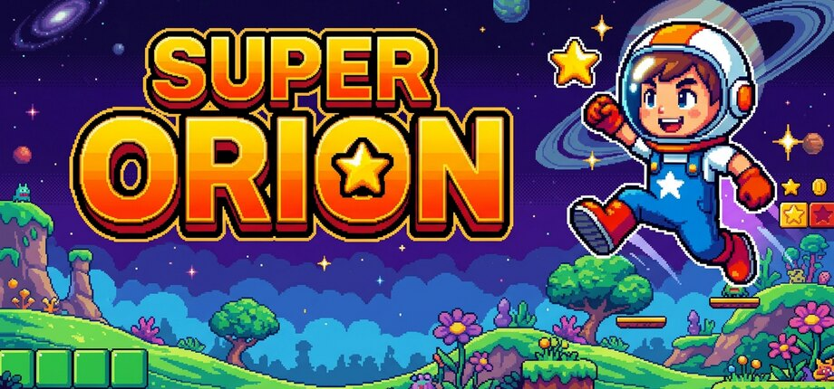
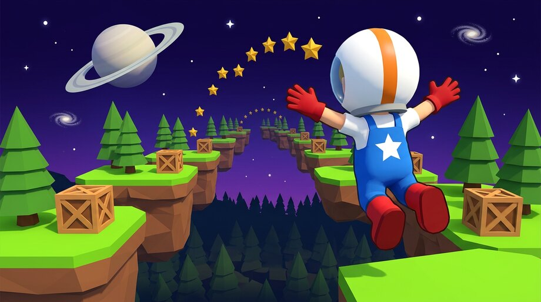

CHOOSE YOUR ADVENTURE

Run, jump and bonk through 11 levels, rescue Mum from King Dad, and hunt down every last star.

The sequel, in full 3D. Spin, stomp and double-jump across jungle canyons and crumbling coastlines.
← → choose · ENTER play · or just tap a card